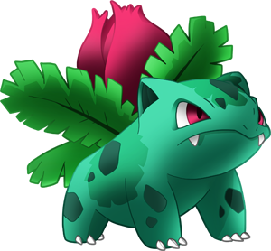

Ivysaur es un Pokémon de tipo planta/veneno introducido en la primera generación. Es la evolución de Bulbasaur, uno de los Pokémon iniciales de Kanto.
Su nombre proviene de las palabras en inglés ivy (hiedra) y saur, traducción al inglés de la palabra griega saûros (reptil o lagarto). Su nombre japonés, Fushigisou, procede de 不思議 草 fushigi sou (hierba extraña). Además, es un juego de palabras al igual que Bulbasaur. En este caso significa parece extraño. Su nombre francés, Herbizarre, proviene de las palabras francesas herbe (hierba) y bizarre (raro o extraño).
Ivysaur posee un color azulado más vivo que su preevolución Bulbasaur. Además, sus ojos adquieren un leve tono violeta y sus pupilas se vuelven negras. El bulbo que había en la espalda de Bulbasaur se convirte en una flor, la cual aún permanece cerrada. Esta flor es usada por Ivysaur de la misma forma que Bulbasaur empleaba su bulbo para la mayoría de sus ataques. La flor crece con la exposición directa al sol, forzando a Ivysaur a caminar a todas horas para conseguir que la luz sea absorbida plenamente. Inversamente a la función del bulbo de Bulbasaur que lo nutría, ahora parece que la flor toma la energía de Ivysaur. De la flor emana un suave y agradable aroma, que con frecuencia atrae a personas y a otros Pokémon. 
Tiene como costumbre exponerse por largo tiempo al sol para que la flor en su lomo comience a desarrollarse. Esta flor necesita constantemente absorber energía y nutrientes para fortalecerse y prepararse para su última etapa evolutiva. Para soportar su peso y su tronco, sus patas crecen muy fuertes. Si pasa un tiempo bajo la luz solar, es una señal de que muy pronto su brote será una gran flor.